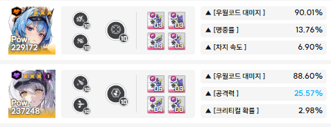
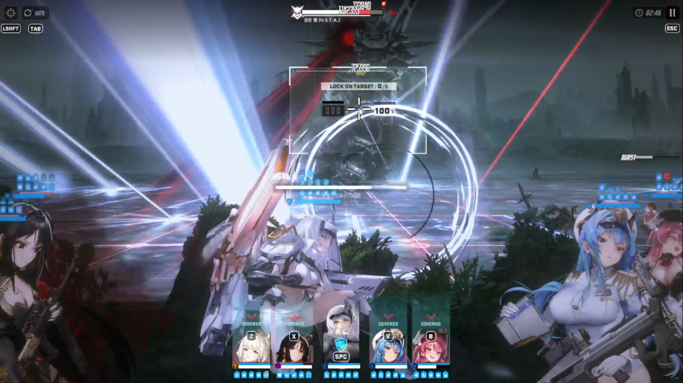
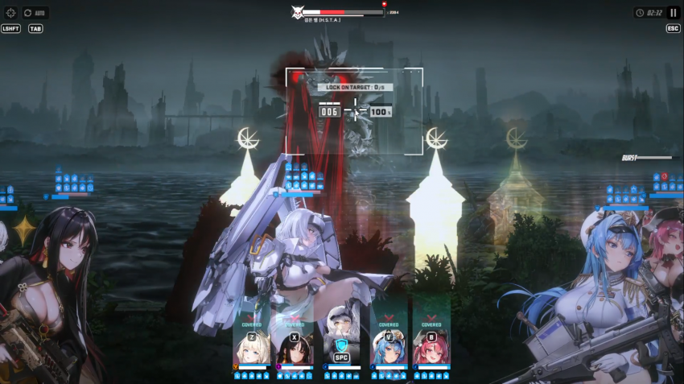
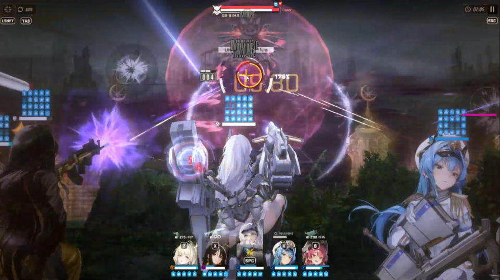
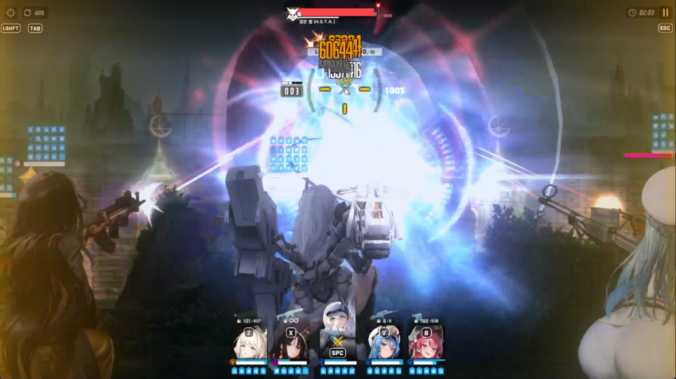
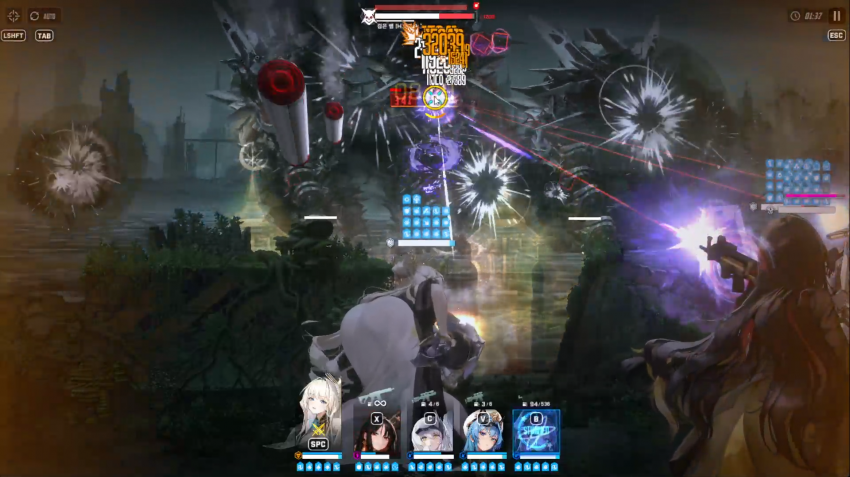
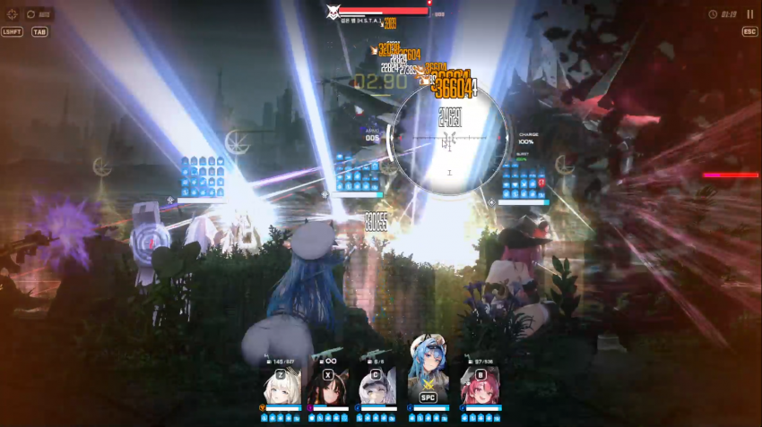
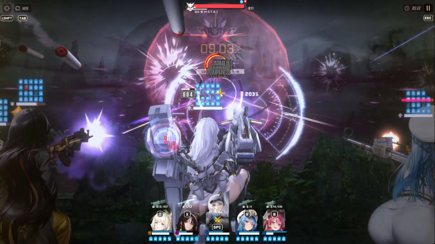
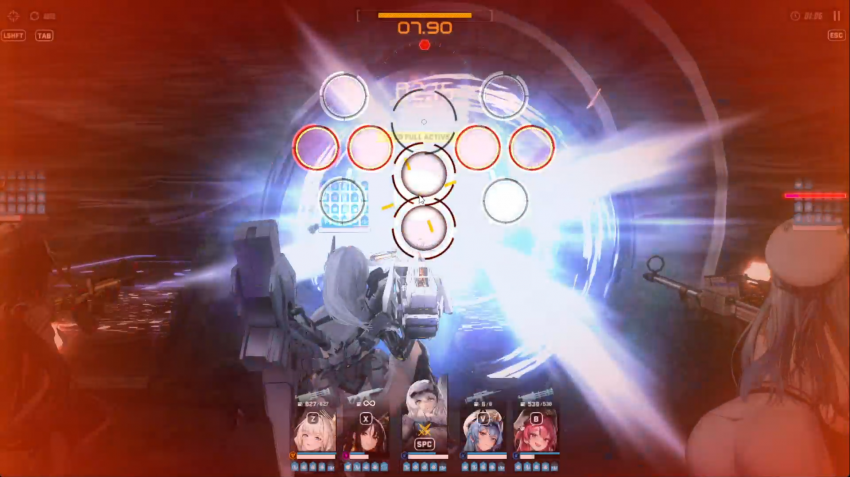

일단 주요 니케 스펙

바로 공략 드가겟슴
일단 버스트는 무조건 각설 몰아주기!

첫버스트 쓴다음 각설 컨트롤 빡세게 했다면 한발 쏜 이후 엄폐하면 딱 맞음
목단 도발에 안 걸리는 경우도 있어서 걍 엄폐하는게 편함
엄폐 안하면 주금

두번째 버스트도 쓰고 나서 한발 쏜 이후 엄폐 한번

속저 들어갈건데 이때 저지 일부러 늦게 해야댐
각설 버스트 켠 이후 속저에 갖다 대서 깨주셈

암막저지 가기 전에 바로 한발 쏴주기
암막저지때 각설 한발쏴도 순차뎀 들어가는지 몰라서 안쐈는데 들어가면 저지에서 한발 쏘셈
이후 암막저지 끝난 다음 각설 한발 쏴주고 바로 크라운 잡아서 도발컨 준비 해야함
나는 그냥 계속 쭉 갈기면 무적 타이밍 맞아서 걍 난사했음

독구슬 날라오기 시작하면 분신에 대미지가 들어감
이때 크라운 무적을 이용해서 분신을 최대한 빠르게 없애야 함
다만, 이때 각설 버스트이기 때문에 esc컨 해가면서 버스트는 최대한 맞춰주는게 좋음

브레스 날릴때 혹시 모르니 헬름 잡고 톡톡이 치삼 죽을수도 잇음

다음속저도 최대한 늦추는데 처음이랑은 다르게 각설 버스트 풀차징 이후 바로 쏴줘야 함
속저하면 바로 암막저지에 들어가기에 바로 발사해야 함

아마 풀버가 좀 짧을거라 암막저지에 각설 한발 쏴줘야 함
그리고 esc컨하면 딱 맞게 버스트 끝날거임
이후에는 열심히 딜하면 끝임
여기까지 해서 안되면 더 자야 하니까 참고